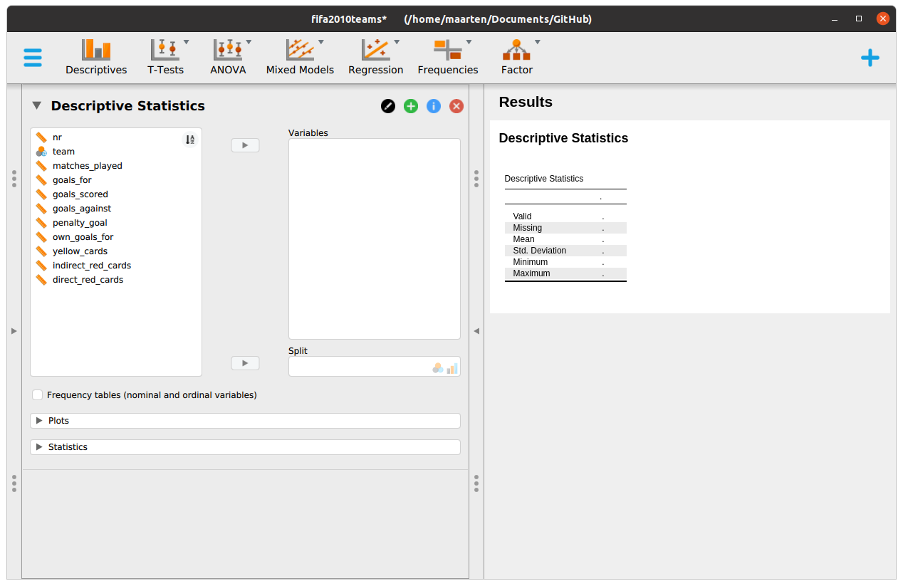
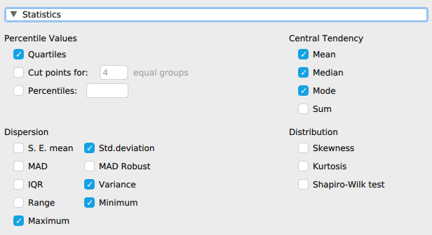
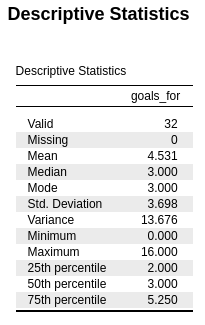
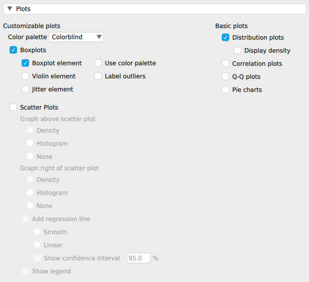

Chapter 1 Introduction
1.1 What is JASP?
JASP is free and open-source software for performing statistical analyses via a graphical user interface. It is developed at, and supported by, the University of Amsterdam. The development of JASP is led by Eric-Jan Wagenmakers, at the Psychological Methods department of the University of Amsterdam. It offers common statistical analyses in both a Frequentist and Bayesian form. JASP is designed to be easy to use, and familiar to users of SPSS. It generally produces APA style results tables and plots so results may be directly copy-pasted into manuscripts for publication. It promotes reproducible and open science by integrating the analysis settings into the results, as well as directly linking to the open science framework. The development of JASP is supported by the University of Amsterdam and several universities and research funds.
1.2 Getting started
1.2.1 Download JASP
You can download JASP from the jasp-stats.org website. It is available for all major platforms (Windows, Mac OSX, and linux). Select the link appropriate for your operating system.
1.3 Working with JASP
When you open JASP, you will be greeted with something like Figure 1.1.
Figure 1.1: Opening screen of JASP
If you click on the “hamburger” menu button (“☰”) on the top left, you will be shown a menu where you can open data files, to get you started. For this menu, you can also change general preferences (just play around with these if you like).
1.4 Working with data
1.4.1 Loading data
JASP comes with a number of pre-installed data sets (and accompanying analyses). You can find these under Open > Data Library. As you can see, there are data sets with examples for many common analyses in psychology, such as a t-test, regression, ANOVA, etc. You can also find folders with all the data sets that come with specific books, such as Andy Field’s Discovering Statistics. Sadly, there is no included data (yet) for “Statistics: Data analysis and modelling”. But it should be straightforward to import the data I discuss in the book into JASP.
1.4.2 Importing data
All data sets discussed in my book can be found in “comma separated value” (CSV) format on the same website as these notes. To get started, download the fifa2010teams dataset from https://mspeekenbrink.github.io/sdam-jasp-companion/data/fifa2010teams.csv. You will need to download the data set to your computer. After that, go to ☰> Open > Computer > Browse, and then find the file to open. You should then see something like Figure 1.2.
Figure 1.2: An open data set in JASP. Variables are assigned measurement scales and these can be easily changed by clicking on the symbol beside the variable name.
JASP will automatically determine the scale of each variable as either nominal, ordinal, or scale (this includes interval and ratio). It does this based on whether the variables are strings (nominal), but also on the number of unique values each variable has (when a small number, it will treat a variable as ordinal). In the fifa2010teams data, teams is correctly classified as nominal, but matches_played, goals_against, and penalty_goal are incorrectly classified as ordinal. While discrete, these variables are all really on a ratio scale. Luckily, the scale is easily changed by clicking on the symbol beside the name of the variable, and then selecting the appropriate scale.
1.4.3 Editing data
JASP does not come with a built-in data editor. That means that while a data set as displayed looks like a spreadsheet, you won’t be able to change the values within JASP. When you double-click on a data set in JASP, you will be directed to use an external program such as LibreOffice Calc, Microsoft Excel, or a text editor, to open and edit the data. If you change a part of the data there, and then save the data file, you will see that the values have changed in JASP. Being able to use any external tool to edit data gives you a lot of flexibility, so that JASP is missing a data editor is not such a problem.
1.5 Exploring data: the Descriptives module
With an active data set, the various JASP modules, such as Descriptives, T-Test, ANOVA, etc., should become available.
You can obtain a range of descriptive statistics, such as the mean, median, variance, etc., as well as exploratory plots, with the Descriptive module. When you click on the “Descriptives”, you will see something like:

The results section on the right contains an empty table. This table will be filled as soon as you select one or more variables on the left side. From the list of all variables in the data, you can drag and drop those that you want to compute descriptive statistics for in the box called “Variables”. Or you can select them and click on the arrow button to move them into the Variables box. You can similarly remove variables from the Variables box. Let’s select goals_for from the list on the left and put it into the Variables box.
1.5.1 Descriptive statistics
The default descriptives table displays the number of observations, the mean, standard deviation, and the minimum and maximum value. You can change which descriptives are computed by clicking on the Statistics menu. You will then see a menu like this one:

Here, you can click on various options, which are pretty self-explanatory. Under Percentile Values, there are different ways to compute percentiles, such as Quartiles computes the 25%, 50%, and 75% percentiles. In the box besides Percentiles, you can enter the exact percentiles you would like to compute, separated by comma’s. For example, if you enter 05, 95 you would get the 5% and 95% percentile. Under Central Tendency, you can obtain the mean, median, and mode, as well as the sum of all values. Under Dispersion, you can obtain the Minimum and Maximum value, as well as the difference between these as the Range of values. You can also get Inter-quartile range (IQR, which is the difference between the 75% and 25% percentile), and the Variance and Std.deviation. There are also some other statistics, that we will discuss at a later point.
As soon as you check (or uncheck) and option, the table changes to reflect your choices. For instance, choosing the options as in the image above, the table would look like:  When you compare the values to those in Section 1.4.1 of “Statistic: Data analysis and modelling”. you will see that the values that JASP gives for the variance, standard deviation, and the 75% percentile are not the same! With regards to percentiles, there are actually many ways in which to compute these. The way I described in Section 1.4.1 is one of the oldest and most straightforward to compute, and relies solely on the values in the data. What JASP reports (and what is also the default in R) is, in a sense, an estimate of a percentile. Similarly, what JASP reports as the variance and standard deviation, are not the sample variance and sample standard deviation, but estimates of what the variance and standard deviation might be for the Data Generating Process. It is possible to compute the sample variance as defined in Section 1.4.1 in JASP, by first computing a new variable to hold the squared deviations, and then computing the average of this. We will discuss computing new variables in JASP a little later. For now, we can use a quicker method. As we will see, the estimator of the variance and standard deviation divide the sum of squared deviations by \(n-1\) rather than \(n\). This implies that, to get the sample variance, we can first multiply the value that JASP provides (the estimated variance) by \(n-1\), and then divide this by \(n\). In the table, you can see that JASP gives the variance as 13.676. Under “valid”, you can also see that \(n=32\). This, we can compute the sample variance as \[ \frac{31 \times 13.676}{32} = 13.249\] The sample standard deviation is then simply the square root of the sample variance.
Unfortunately, there is no option to change the way in which JASP calculates percentiles, so it is not straightforward to reproduce with JASP the values reported in Section 1.4.1. That said, the way in which percentiles are certainly estimated are reasonable, so we can just be happy with those values.
1.5.2 Exploratory plots
When you click on the Plots menu within the “Descriptive statistics” module, you will see a menu like this one:

There are two types of plots: Customizable plots and Basic plots. The former allow you some flexibility in what the plot contains, while the latter are 9even more) constrained.
To plot a histogram, you can tick Distribution plot under Basic plots.
To plot a boxplot, you can tick Boxplot under Customizable plots. If you only tick Boxplot element you get a standard boxplot. You can add a mirrored nonparametric density plot by ticking Violin element, as well as jittered data values by ticking Jitter element. The result is has the same elements as a raincloud plot, but because everything is overlaid on top of each other, it is not as clear.
To plot a scatterplot, you need to have entered at least two variables in the Variables box. When you then tick Scatterplots under Customizable plots, you get a scatterplot, as well as nonparametric density estimates of each variable in the margins, as well “smooth regression line” which depicts an estimate of the relation between the two variables. If you just want a simple scatterplot, you will need to tick None under Graph above and Graph to right of scatter plot, and untick Add regression line.
1.6 Annotating and working with JASP output
To keep track of what you are doing and why, it can be useful to add notes to your output, e.g. to explain details and interpret results. If you click on the title of a section in your output, you will see a menu like this one:

Edit Titleallows you to change the titleCopyallows you to copy a selection or all results in Word format to the clipboard, so that you can paste everything in a word processor.Add notewill add a text block, so that you can annotate part of the outputDuplicateduplicates a block (analysis) so you can for instance repeat an analysis with different settingsRemoveremoves a block (analysis) from the output
1.7 Saving your work
1.7.1 Saving tables and plots
To save your results, you can use the Copy functionality discussed above to copy and paste your results to a Word processor. You can save individual plots by clicking on the downwards arrow besides the title of the plot, and then select “Save Image As”. Finally, you can also export all results to HTML format through ☰> Export Results > Computer > Browse.
1.7.2 Saving JASP files
As we have already indicated, a really nice feature of JASP is that is stores all data and settings of analyses as part of the output. If you save the output as a JASP file, when you open it next time, you will have the data and analyses and output ready to add to or change. You can save everything you are working on as a JASP file by ☰> Save as > Computer > Browse, which will then ask you to give a name and location for your file. Next time, you will also be able to use Save instead of Save as.